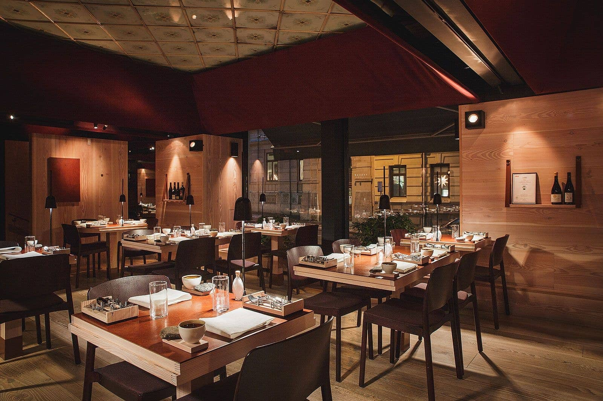

Chef Tingeling
En prisbelönt kock från Masterchef — hantverk, teknisk precision och en passion för exceptionella smaker.
Efter år i Paris och London vände Mr. Strid hem för att skapa en plats där varje rätt är en föreställning. Här kombineras klassisk fransk teknik med nordiska råvaror och en modern, lekfull touch.
Boka bord
Resan
Mr. Strid formades i några av Europas mest krävande kök. Hans resa präglas av långa dagar, minutiös disciplin och en ständig strävan efter perfektion. Efter att ha vunnit Masterchef bestämde han sig för att samla allt sitt kunnande i en egen restaurang — Chef Tingeling.
Filosofi
Matlagning är berättelse och känsla. Varje råvara behandlas med respekt — säsong, ursprung och textur är ledstjärnor i köket. Menyn förändras med råvarornas bästa ögonblick.
"Jag vill att varje gäst ska lämna med ett minne — inte bara en mättnadskänsla."
Utmärkelser
- Masterchef — Vinnare
- Nominerad till Årets Krog (lokalt pris)
- Hedrande omnämnanden i matpressen
Snabbfakta
Adress: Grev Turegatan 15
Telefon: 08-123 45 67
E-post: info@cheftingeling.se